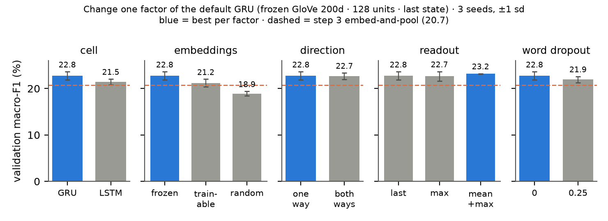
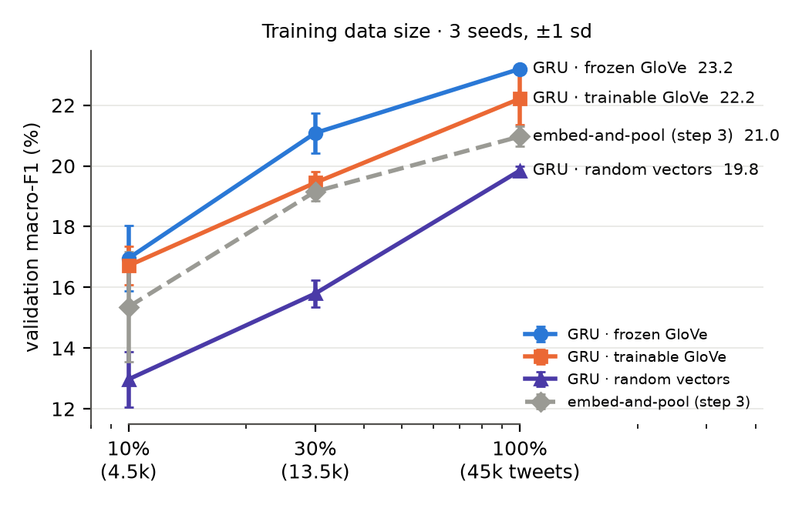
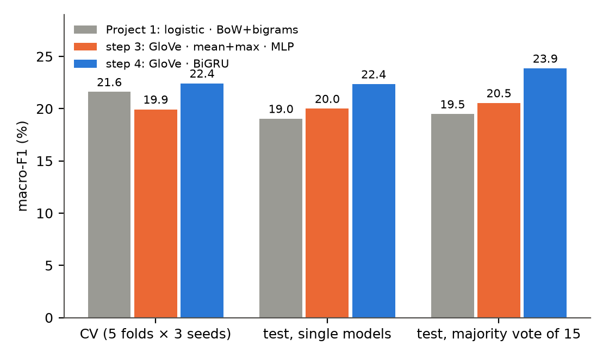
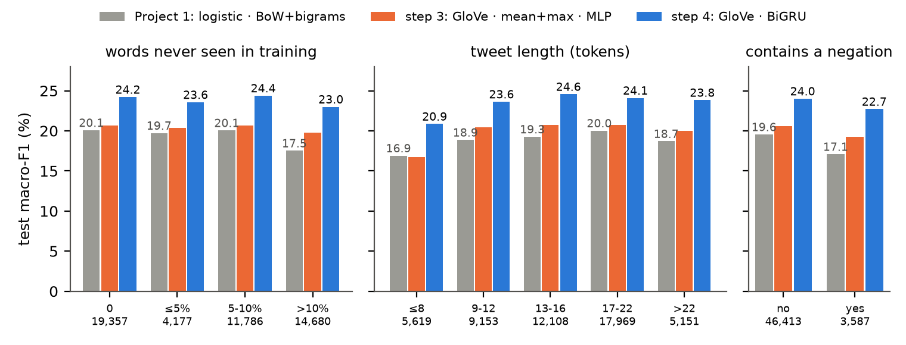
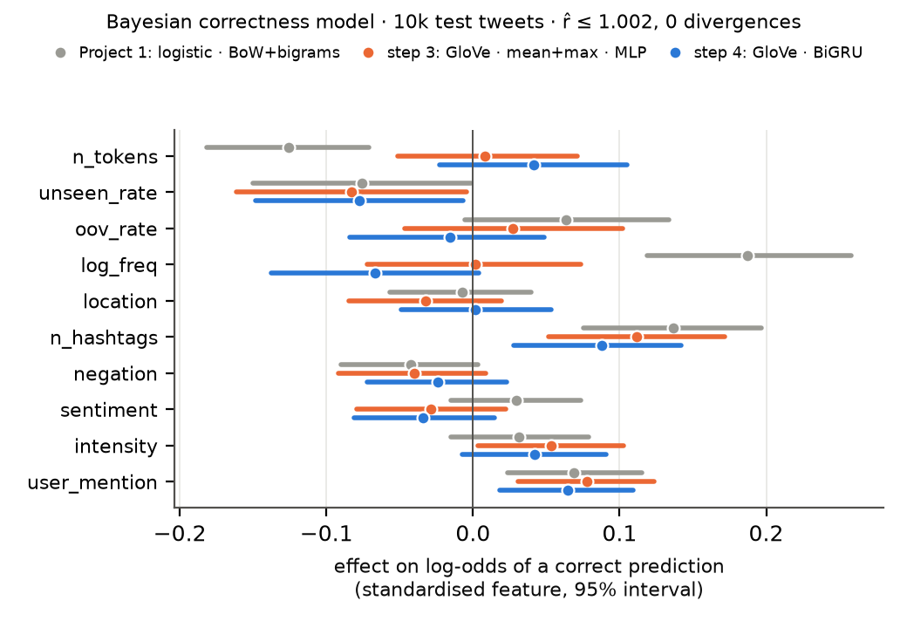

tweet → GloVe tokens → word vectors → GRU / LSTM → readout → MLP → 20 emojis
One factor at a time, 3 seeds each (validation macro-F1, top chart):
Training data size: 10 / 30 / 100% of the 45k tweets (bottom chart):


Search, coarse to fine:
Variance:
Bayesian correlated t-test on the 15 paired CV scores, ROPE ±1 point (box):

10 features per test tweet: length, words unseen in training, no GloVe vector, word frequency, "@ Place" ending (49% of tweets), hashtags, negation, sentiment, intensity, @user
Tested by score per bin (top) and the course's Bayesian correctness model (bottom right; 10k tweets, r̂ ≤ 1.002, 0 divergences):
Next: treat near-duplicate emojis together (or top-2), contextual embeddings, split glued hashtags

